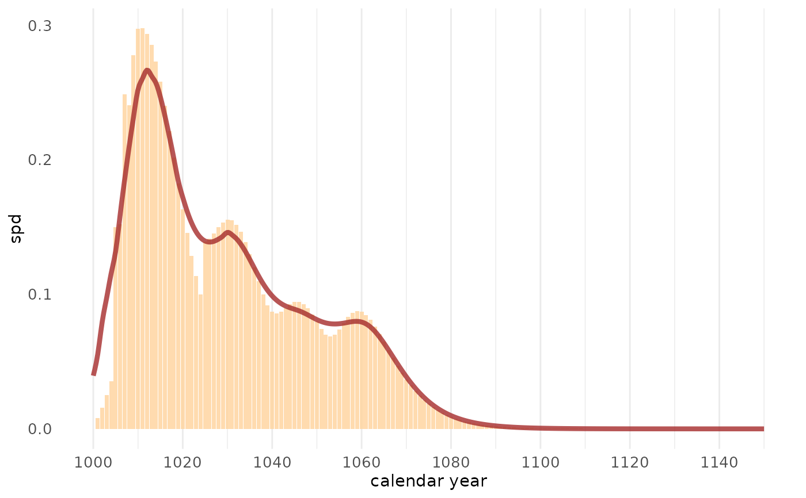

This function plots the result of sw_sum() - both the SPD and
the occurrence of exact felling dates - and adds a smoothing spline to the
SPD.
Usage
sw_sum_plot(
x,
bar_col = "steelblue",
trend_col = "red3",
dot_col = "steelblue4",
dot_size = 2,
dot_shape = 21,
window_smooth = 11
)Arguments
- x
The output of
sw_sum().- bar_col
The fill color for the bars.
- trend_col
The line color of the fitted smoothing spline.
- dot_col
The color of the shapes that represent exact felling dates.
- dot_size
A size argument for the shapes that represent exact felling dates.
- dot_shape
Number corresponding to the point symbol available in R for the shapes that represent exact felling dates.
- window_smooth
A numeric value for the window width of the trend line
Value
A ggplot style graph, with calendar years on the X-axis and the probability (p) on the Y-axis.
Examples
trs_example6 <- trs_example6
trs_example6
#> series last n_sapwood waneyedge
#> 1 trs_25 1000 5 FALSE
#> 2 trs_26 1009 10 FALSE
#> 3 trs_27 1007 15 FALSE
#> 4 trs_28 1005 16 FALSE
#> 5 trs_29 1010 8 FALSE
#> 6 trs_30 1020 0 FALSE
#> 7 trs_31 1025 10 FALSE
#> 8 trs_32 1050 3 FALSE
#> 9 trs_33 1035 1 FALSE
tmp <- sw_sum(trs_example6)
sw_sum_plot(tmp, bar_col = "burlywood1",
trend_col = "brown",
dot_col = "orange",
dot_shape = 23, dot_size = 5)
